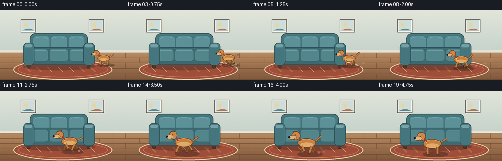
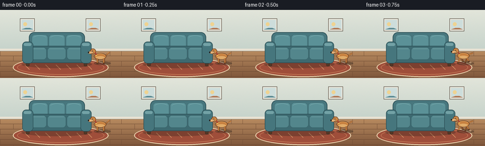

CODING AGENTS AS PIXEL WORLD MODELS
traex/Seed-2.1-Pro-0915 · dynamic_spatial_relationship_0003
点击播放 · 原生 RGB 像素
逐轮保存的候选
回放视频、检查图与代码变化。
每份候选均可单独播放。实际图片检查记录在下方工具轨迹中。
候选 01播放与检查图
点击播放 · 原生 RGB 像素


展开代码变化
--- 上一保存版本
+++ 本次保存版本
@@ -0,0 +1,294 @@
+"""Generate the five-second text-to-video scene defined in prompt.txt."""
+
+from pathlib import Path
+import math
+
+import numpy as np
+from PIL import Image, ImageDraw
+
+import artifact_io
+
+
+WIDTH, HEIGHT, FRAME_COUNT, FPS = 256, 144, 20, 4.0
+SS = 3
+CW, CH = WIDTH * SS, HEIGHT * SS
+
+
+def smoothstep(value):
+ value = np.clip(value, 0.0, 1.0)
+ return value * value * (3.0 - 2.0 * value)
+
+
+def rect(x0, y0, x1, y1):
+ return [x0 * SS, y0 * SS, x1 * SS, y1 * SS]
+
+
+def points(values):
+ return [(x * SS, y * SS) for x, y in values]
+
+
+def line_width(width):
+ return max(1, int(round(width * SS)))
+
+
+def make_background():
+ """Paint the room, rug, and sofa once; the dog is added per frame."""
+ rng = np.random.default_rng(7)
+ floor_y = 86
+ high_floor = floor_y * SS
+
+ wall_top = np.array([226, 229, 218], dtype=np.float32)
+ wall_bottom = np.array([198, 211, 203], dtype=np.float32)
+ floor_top = np.array([184, 139, 96], dtype=np.float32)
+ floor_bottom = np.array([126, 86, 59], dtype=np.float32)
+
+ wall_t = np.linspace(0.0, 1.0, high_floor)[:, None, None]
+ floor_t = np.linspace(0.0, 1.0, CH - high_floor)[:, None, None]
+ wall = wall_top * (1.0 - wall_t) + wall_bottom * wall_t
+ floor = floor_top * (1.0 - floor_t) + floor_bottom * floor_t
+ pixels = np.concatenate([wall, floor], axis=0)
+ pixels = np.repeat(pixels, CW, axis=1)
+ pixels += rng.normal(0.0, 1.7, pixels.shape)
+ image = Image.fromarray(np.clip(pixels, 0, 255).astype(np.uint8), "RGB")
+ draw = ImageDraw.Draw(image)
+
+ # Wooden floor planks and staggered seams.
+ plank_h = 11
+ for row, y in enumerate(range(floor_y, HEIGHT, plank_h)):
+ draw.line(rect(0, y, WIDTH, y), fill=(102, 69, 47), width=line_width(0.7))
+ offset = 0 if row % 2 == 0 else 28
+ for x in range(offset, WIDTH, 58):
+ draw.line(rect(x, y, x, min(HEIGHT, y + plank_h)),
+ fill=(112, 77, 53), width=line_width(0.55))
+
+ # Baseboard.
+ draw.rectangle(rect(0, 82, WIDTH, 87), fill=(232, 226, 211))
+ draw.line(rect(0, 87, WIDTH, 87), fill=(151, 139, 122), width=line_width(1))
+
+ # Two quiet framed prints above the sofa.
+ for x0, accent in [(42, (91, 137, 145)), (181, (177, 119, 83))]:
+ x1, y0, y1 = x0 + 31, 18, 45
+ draw.rectangle(rect(x0, y0, x1, y1), fill=(238, 234, 221),
+ outline=(91, 82, 72), width=line_width(1))
+ draw.rectangle(rect(x0 + 3, y0 + 3, x1 - 3, y1 - 3),
+ fill=(205, 221, 219))
+ draw.ellipse(rect(x0 + 7, y0 + 8, x0 + 15, y0 + 16), fill=(239, 211, 145))
+ draw.polygon(points([(x0 + 3, y1 - 4), (x0 + 12, y0 + 20),
+ (x0 + 21, y1 - 7), (x1 - 3, y1 - 4)]),
+ fill=accent)
+
+ # Rug, drawn in perspective.
+ draw.ellipse(rect(27, 101, 229, 142), fill=(159, 78, 58),
+ outline=(231, 205, 168), width=line_width(2))
+ draw.ellipse(rect(36, 106, 220, 137), outline=(198, 122, 86),
+ width=line_width(1.2))
+ for x in range(52, 205, 22):
+ draw.line(rect(x, 116, x + 10, 126), fill=(214, 151, 105),
+ width=line_width(1))
+
+ # Soft contact shadow beneath the sofa.
+ shadow = Image.new("RGBA", (CW, CH), (0, 0, 0, 0))
+ shadow_draw = ImageDraw.Draw(shadow)
+ shadow_draw.ellipse(rect(45, 107, 194, 123), fill=(35, 28, 23, 72))
+ image = Image.alpha_composite(image.convert("RGBA"), shadow).convert("RGB")
+ draw = ImageDraw.Draw(image)
+
+ # Sofa legs.
+ for x in (55, 177):
+ draw.rounded_rectangle(rect(x, 108, x + 7, 119), radius=2 * SS,
+ fill=(83, 55, 39), outline=(55, 37, 28),
+ width=line_width(0.7))
+
+ # Sofa body and separate cushions.
+ draw.rounded_rectangle(rect(61, 47, 179, 93), radius=11 * SS,
+ fill=(72, 119, 126), outline=(42, 77, 83),
+ width=line_width(1.2))
+ cushion_xs = [(67, 101), (103, 137), (139, 173)]
+ for x0, x1 in cushion_xs:
+ draw.rounded_rectangle(rect(x0, 52, x1, 85), radius=7 * SS,
+ fill=(91, 145, 151), outline=(57, 101, 108),
+ width=line_width(0.8))
+ draw.arc(rect(x0 + 3, 54, x1 - 3, 65), 200, 340,
+ fill=(132, 178, 181), width=line_width(0.8))
+
+ draw.rounded_rectangle(rect(53, 76, 187, 112), radius=10 * SS,
+ fill=(61, 105, 112), outline=(40, 74, 80),
+ width=line_width(1.1))
+ seat_xs = [(59, 98), (100, 139), (141, 181)]
+ for x0, x1 in seat_xs:
+ draw.rounded_rectangle(rect(x0, 79, x1, 105), radius=7 * SS,
+ fill=(83, 134, 140), outline=(53, 96, 103),
+ width=line_width(0.8))
+ draw.line(rect(x0 + 4, 82, x1 - 4, 82),
+ fill=(127, 173, 176), width=line_width(0.7))
+
+ for x0, x1 in ((47, 70), (170, 193)):
+ draw.rounded_rectangle(rect(x0, 67, x1, 113), radius=8 * SS,
+ fill=(70, 118, 125), outline=(40, 74, 80),
+ width=line_width(1))
+ draw.rounded_rectangle(rect(x0 + 3, 70, x1 - 4, 76), radius=3 * SS,
+ fill=(115, 162, 166))
+
+ return image
+
+
+def draw_leg(draw, hip_x, phase, far, moving, bob):
+ """Draw one animated leg in local dog coordinates."""
+ if moving:
+ foot_x = hip_x + 5.2 * math.sin(phase)
+ lift = max(0.0, math.sin(phase)) * 3.2
+ else:
+ foot_x, lift = hip_x, 0.0
+ color = (138, 83, 42) if far else (196, 126, 62)
+ edge = (92, 57, 34)
+ offset = 1.6 if far else 0.0
+ hip = (hip_x + offset, -11.0 - bob)
+ knee = ((hip_x + foot_x) * 0.5 + offset, -6.5 - bob - lift * 0.35)
+ foot = (foot_x + offset, -lift)
+ draw.line(points([hip, knee, foot]), fill=edge, width=line_width(3.4),
+ joint="curve")
+ draw.line(points([hip, knee, foot]), fill=color, width=line_width(2.4),
+ joint="curve")
+ draw.ellipse(rect(foot[0] - 2.2, foot[1] - 1.4,
+ foot[0] + 2.4, foot[1] + 1.1), fill=edge)
+
+
+def draw_dog(base_image, x, ground, scale, phase, moving, frame_index):
+ image = base_image.convert("RGBA")
+ draw = ImageDraw.Draw(image)
+
+ bob = 1.6 * abs(math.sin(phase)) if moving else 0.15 * math.sin(frame_index * 0.9)
+ wag = math.sin(phase * 1.35 if moving else frame_index * 0.8)
+ ear_flap = 1.8 * math.sin(phase) if moving else 0.0
+
+ def p(lx, ly):
+ return (x + lx * scale) * SS, (ground + (ly - bob) * scale) * SS
+
+ def b(x0, y0, x1, y1):
+ return [p(x0, y0)[0], p(x0, y0)[1], p(x1, y1)[0], p(x1, y1)[1]]
+
+ def poly(local_points, fill, outline=None, width=0.8):
+ mapped = [p(lx, ly) for lx, ly in local_points]
+ draw.polygon(mapped, fill=fill)
+ if outline:
+ draw.line(mapped + [mapped[0]], fill=outline,
+ width=line_width(width), joint="curve")
+
+ def leg(hip_x, leg_phase, far):
+ old = draw_leg # Keeps the animation helper explicit at module scope.
+ del old
+ if moving:
+ foot_x = hip_x + 5.2 * math.sin(leg_phase)
+ lift = max(0.0, math.sin(leg_phase)) * 3.2
+ else:
+ foot_x, lift = hip_x, 0.0
+ color = (138, 83, 42) if far else (198, 126, 62)
+ edge = (92, 57, 34)
+ offset = 1.5 if far else 0.0
+ hip = p(hip_x + offset, -11)
+ knee = p((hip_x + foot_x) * 0.5 + offset, -6.4 - lift * 0.35)
+ foot = p(foot_x + offset, -lift)
+ draw.line([hip, knee, foot], fill=edge, width=line_width(3.3 * scale),
+ joint="curve")
+ draw.line([hip, knee, foot], fill=color, width=line_width(2.35 * scale),
+ joint="curve")
+ draw.ellipse([foot[0] - 2.0 * SS, foot[1] - 1.2 * SS,
+ foot[0] + 2.3 * SS, foot[1] + 1.0 * SS], fill=edge)
+
+ # Far legs are behind the body. Diagonal pairs create a trot.
+ leg(3.0, phase + math.pi, True)
+ leg(-11.5, phase, True)
+
+ tail_tip = (17.0, -25.5 + wag * 3.2)
+ tail_mid = (12.0, -21.5 + wag * 1.5)
+ draw.line([p(7.5, -17.5), p(*tail_mid), p(*tail_tip)],
+ fill=(91, 56, 34), width=line_width(3.0 * scale), joint="curve")
+ draw.line([p(7.5, -17.5), p(*tail_mid), p(*tail_tip)],
+ fill=(198, 126, 62), width=line_width(2.0 * scale), joint="curve")
+
+ draw.ellipse(b(-18.5, -23.0, 9.0, -8.5), fill=(199, 128, 63),
+ outline=(96, 59, 35), width=line_width(1.0))
+ draw.ellipse(b(-14.5, -16.0, 5.5, -9.3), fill=(224, 171, 105))
+ draw.arc(b(-16.5, -22.0, 6.5, -10.0), 190, 340,
+ fill=(229, 166, 96), width=line_width(0.9))
+
+ # Near legs and paws.
+ leg(3.0, phase, False)
+ leg(-11.5, phase + math.pi, False)
+
+ # Head, drooping ear, snout, and facial details.
+ poly([(-24.5, -33.2), (-17.8, -32.6 + ear_flap),
+ (-20.6, -24.8), (-25.8, -27.0)],
+ (126, 76, 43), (82, 50, 31))
+ draw.ellipse(b(-27.5, -33.0, -14.5, -20.5), fill=(205, 135, 69),
+ outline=(96, 59, 35), width=line_width(0.9))
+ draw.ellipse(b(-31.8, -27.4, -20.0, -20.9), fill=(226, 178, 121),
+ outline=(105, 67, 40), width=line_width(0.75))
+ draw.ellipse(b(-32.4, -26.2, -29.2, -23.2), fill=(35, 29, 25))
+ draw.ellipse(b(-23.0, -28.8, -21.4, -27.2), fill=(31, 26, 23))
+ draw.ellipse(b(-22.6, -28.5, -22.0, -27.9), fill=(245, 238, 220))
+ draw.arc(b(-29.5, -25.8, -23.0, -21.0), 350, 120,
+ fill=(88, 52, 33), width=line_width(0.65))
+
+ # Collar and a small tag give the silhouette an extra readable detail.
+ draw.line([p(-16.4, -24.5), p(-13.4, -18.7)],
+ fill=(174, 57, 45), width=line_width(2.0 * scale))
+ tag_x, tag_y = p(-13.2, -17.4)
+ draw.ellipse([tag_x - 1.2 * SS, tag_y - 1.2 * SS,
+ tag_x + 1.2 * SS, tag_y + 1.2 * SS], fill=(232, 196, 93))
+
+ return image.convert("RGB")
+
+
+def main():
+ background = make_background()
+ rng = np.random.default_rng(21)
+ frames = []
+ dust = []
+
+ for i in range(FRAME_COUNT):
+ progress = smoothstep((i - 2) / 14.0)
+ moving = 2 < i < 17
+
+ # The dog starts beyond the sofa's right edge and finishes centered
+ # in the foreground, where its increased scale communicates depth.
+ x = 216.0 - 96.0 * progress
+ ground = 113.0 + 17.0 * progress
+ scale = 0.94 + 0.42 * progress
+ phase = max(0.0, i - 2) * 1.18
+
+ if moving and i % 2 == 1:
+ dust.append((x + 11.0 * scale, ground - 2.0, i))
+ dust = [(dx, dy, born) for dx, dy, born in dust if i - born <= 5]
+
+ effects = Image.new("RGBA", (CW, CH), (0, 0, 0, 0))
+ effect_draw = ImageDraw.Draw(effects)
+
+ shadow_w = 19.0 * scale
+ shadow_h = 4.2 * scale
+ effect_draw.ellipse(
+ rect(x - shadow_w, ground - shadow_h, x + shadow_w, ground + shadow_h),
+ fill=(31, 25, 20, 88))
+
+ for dx, dy, born in dust:
+ age = i - born
+ alpha = int(72 * (1.0 - age / 6.0))
+ drift = age * 2.2
+ rise = age * 1.4
+ effect_draw.ellipse(
+ rect(dx + drift - 2.5, dy - rise - 2.0,
+ dx + drift + 2.5, dy - rise + 2.0),
+ fill=(218, 202, 178, alpha))
+
+ frame = Image.alpha_composite(background.convert("RGBA"), effects)
+ frame = draw_dog(frame.convert("RGB"), x, ground, scale, phase,
+ moving, i)
+ frame = frame.resize((WIDTH, HEIGHT), Image.Resampling.LANCZOS)
+ frames.append(np.asarray(frame, dtype=np.uint8))
+
+ case_dir = Path(__file__).resolve().parent
+ artifact_io.save(np.stack(frames), case_dir)
+
+
+if __name__ == "__main__":
+ main()
可观测工具轨迹
实际执行的命令与返回图片。
命令 1exit 0
/bin/bash -lc 'ls -la && cat prompt.txt GENERATION_RULES.md task_spec.json'
命令 2exit 0
/bin/bash -lc "cat artifact_io.py && sed -n '1,220p' player_template.html"
命令 3exit 0
/bin/bash -lc 'python generate.py && ls -lh pixels.npz inspection.png index.html frames | head -30'
命令 4exit 0
/bin/bash -lc "python - <<'PY'
import numpy as np
from PIL import Image
from pathlib import Path
frames=np.stack([np.array(Image.open(Path('frames')/f'{i:02d}.png')) for i in range(20)])
print('shape', frames.shape, 'dtype', frames.dtype, 'range', frames.min(), frames.max())
r,g,b=frames[...,0],frames[...,1],frames[...,2]
# Golden dog pixels, excluding warmer wood by requiring high red/green contrast over blue.
mask=(r>120)&(g>65)&(g<190)&(b<115)&((r-b)>70)&((r-g)>25)
for i,m in enumerate(mask):
ys,xs=np.where(m)
print(f'{i:02d}: bbox x={xs.min():3d}..{xs.max():3d} y={ys.min():3d}..{ys.max():3d} n={m.sum():4d}')
print('mean abs delta', np.abs(np.diff(frames.astype(int),axis=0)).mean(axis=(1,2,3)).round(2))
PY"命令 5exit 0
/bin/bash -lc "python - <<'PY'
import numpy as np
from PIL import Image
from pathlib import Path
for i in [0,2,5,9,13,16,17,19]:
a=np.array(Image.open(Path('frames')/f'{i:02d}.png'))
r,g,b=a[...,0],a[...,1],a[...,2]
m=(r>175)&(g>90)&(g<175)&(b<105)&((r-g)>45)&((r-b)>80)
ys,xs=np.where(m)
print(i, (xs.min(),xs.max(),ys.min(),ys.max(),m.sum()))
# render coarse occupancy grid within y 75:140 x 90:235
crop=m[75:140,90:235]
print('\\n'.join(''.join('#' if crop[y:y+5,x:x+8].mean()>0.08 else '.' for x in range(0,crop.shape[1],8)) for y in range(0,crop.shape[0],5)))
print()
PY"命令 6exit 0
/bin/bash -lc "python - <<'PY'
import numpy as np
from PIL import Image
from pathlib import Path
chars=' .:-=+*#%@'
for i in [0,4,9,14,19]:
img=Image.open(Path('frames')/f'{i:02d}.png').convert('L').resize((64,32))
a=np.array(img)
print(f'--- frame {i} ---')
print('\\n'.join(''.join(chars[min(9,int(v/256*10))] for v in row) for row in a))
PY"保存候选 1 份；完成命令 6 次；可验证图片返回 0 张。原始 API 响应与完整日志保留在本地。